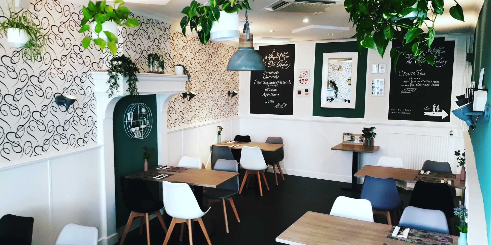
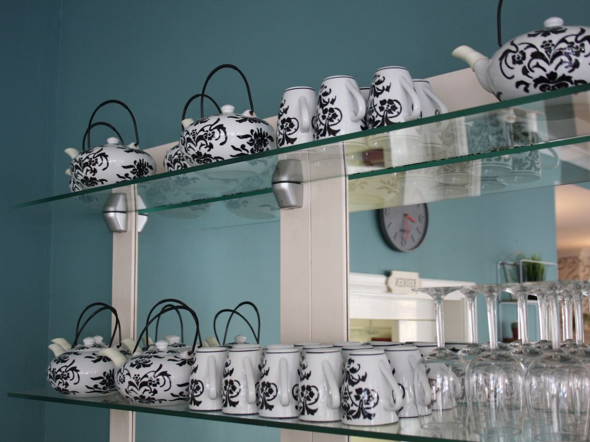
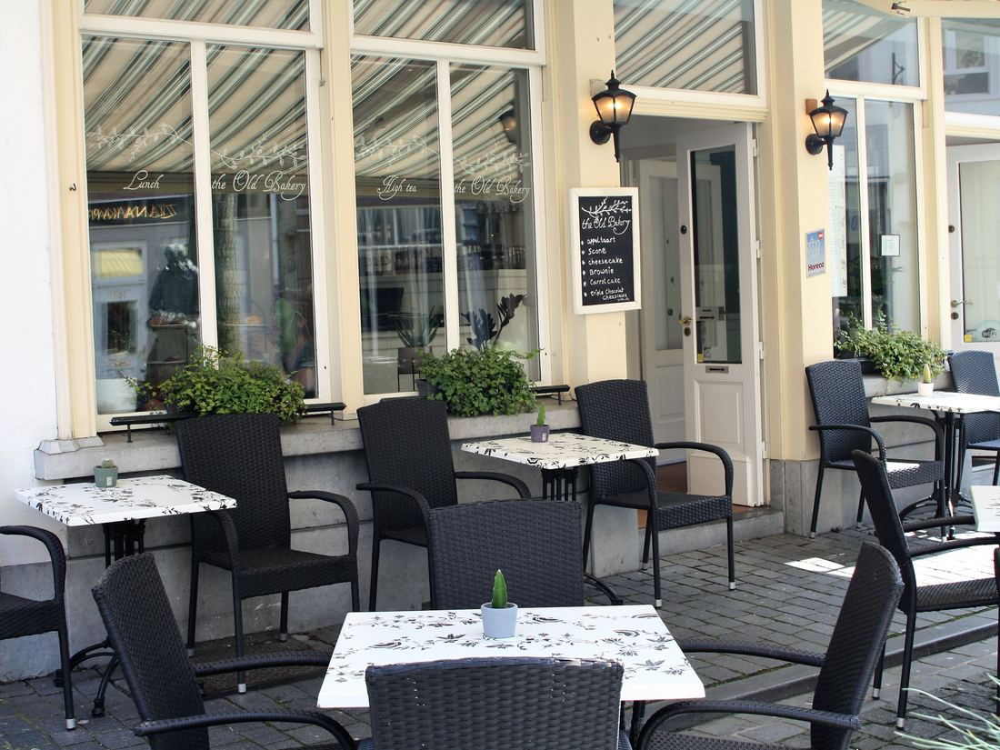
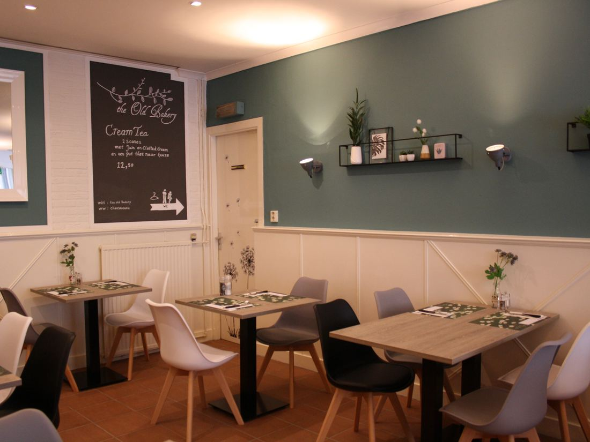
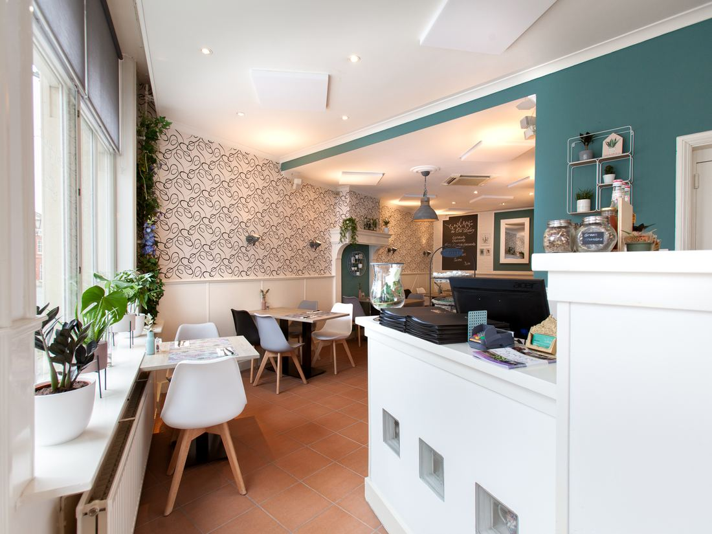

Sinds 2007 vlak bij de Grote Markt in Bergen op Zoom. Scones, cheesecake, jam en clotted cream maken we zelf, en alles kan glutenvrij.
Van heinde en verre komt men (terug) voor onze high tea: een mix van hartige en zoete lekkernijen, met onbeperkt thee. Te reserveren vanaf 2 personen.

We hebben cadeaubonnen van al onze high tea's, maar ook voor elk gewenst bedrag.

Je loopt er langs en de geur van huisgemaakte scones, cheesecake en koffie komt je tegemoet. Sinds 2007 zitten we in ons knusse lunchroom aan de Bosstraat, vlak bij de Grote Markt.
We serveren onze gasten het beste van het beste: alleen verse kwaliteitsproducten, en ons brood, de koffie en thee zijn biologisch. Ons glutenvrije brood bakken we zelf, net als de jam en clotted cream voor bij de scones.
Hopelijk tot snel! Pau-man & Rudo


Voor een lunch kun je gewoon binnenlopen. Voor een high tea reserveer je minimaal 2 dagen van tevoren.
Bel ons of stuur een mail met de datum, het aantal personen en eventuele allergieën.
De 1e zondag van de maand zijn we gesloten. Ook gesloten: zondag 1 november en zondag 6 december.
Parkeergarage Grote Markt (Koepelstraat 50) ligt op 2 minuten lopen. Bij ons koop je een uitrijkaart voor €4,00, de hele dag geldig.
Huisdieren zijn helaas niet toegestaan.